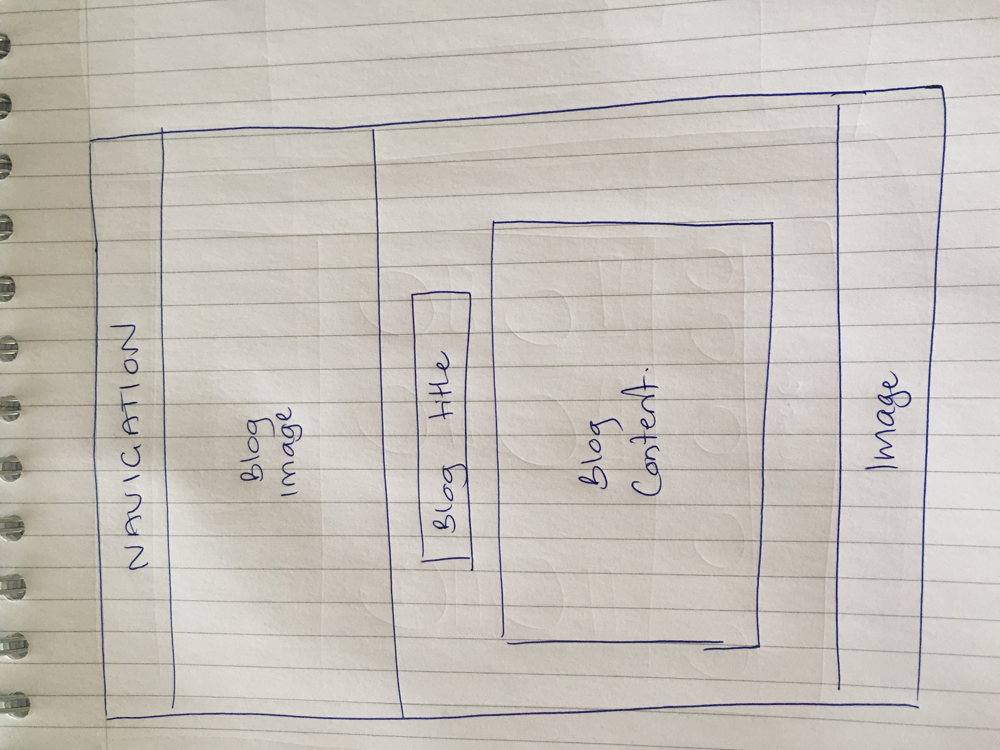
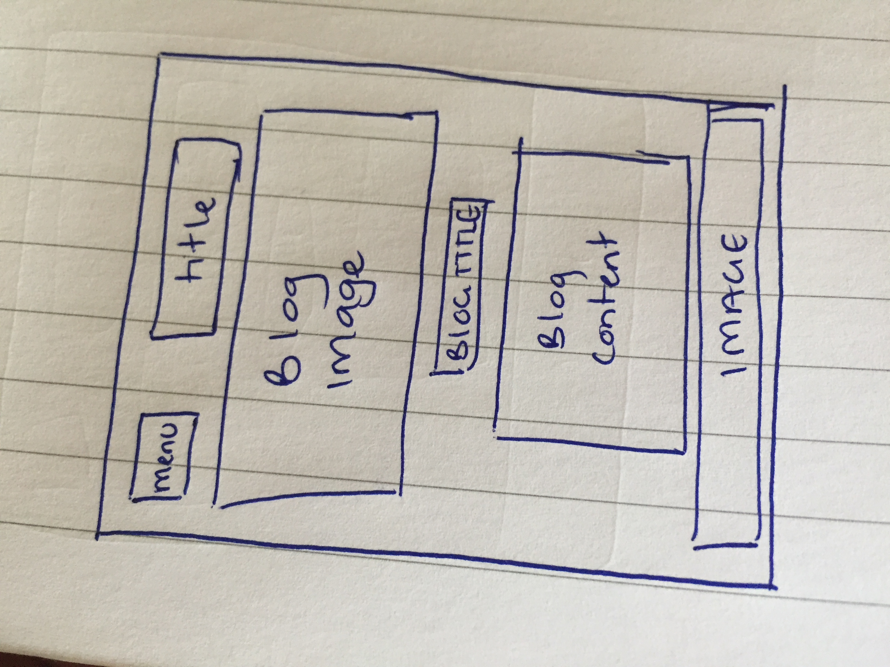
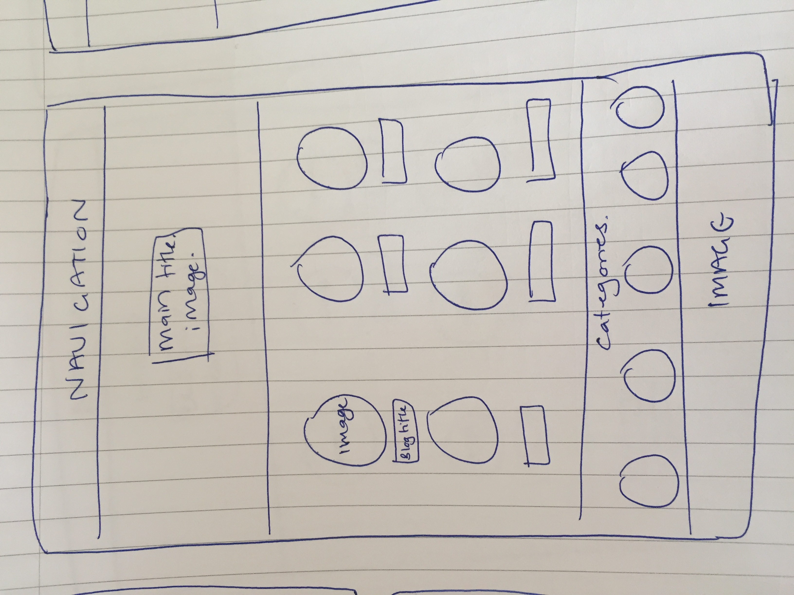
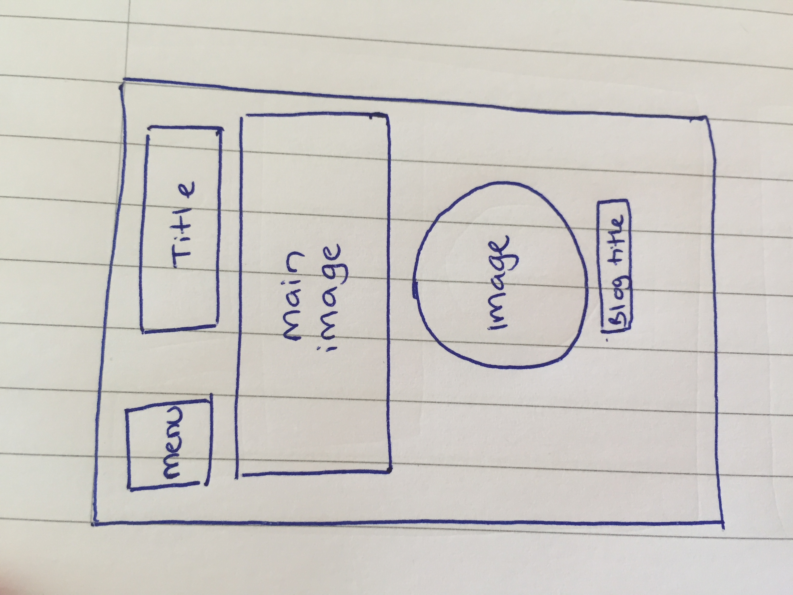

What a responsive site is, and why responsiveness is important.
A responsive site responds to changes in the size of the screen, so will adjust to being viewed on a mobile, or a widescreentv.
This allows greater accessibility to your website, as it can be accessed and navigated
easily on multiple devices. This is important, as you want to be able to have the same impact regardles of the device used.
What mobile first design is, and why it's important.
Mobile first design, is the concept that designerd should first consider what they're website will look like
on a mobile device, and how it will function. Using this method is important, as designing something on a larger device, you may find it
does not work well when scaled down, and may not have the same value.
What frameworks are, and their pros and cons.
Frameworks contain pre-structured elements used in developing a website. Examples include Bootstrap and Skeleton.
The postives of using a framework can be that they save time, and elements are structured for you. They also tend to have a large resource base where
you can get ask questions or look through examples and documentation.
Frameworks can have negative aspects, such as if you require a specific structure or feature that isn't available, which would mean you couldn't use the framework at all.
For this reason, frameworks may be favoured for more simple websites, and have less flexibility for one more complicated.
What a wireframe is and why we use it.
A wireframe is a an image used to display the functional elements
of a website, and is typically used for planning a site's structure and functionality.
We use wireframes as a starting point, because this can help clarify expectations of the site, as well as determine the flow and usability.




The aspects of your wireframes you found difficult to implement, and why.
I think the aspects of the wireframe i found the most difficulty with were those that were easy to draw, but not as easy to code to look the same as the drawing.
For example, the circular linked images, and their positioning, took me some time to figure out, and I still feel there is a better wayto achieve it,
but being a beginner, I think there were bound to be complications upon implementing the wireframe.